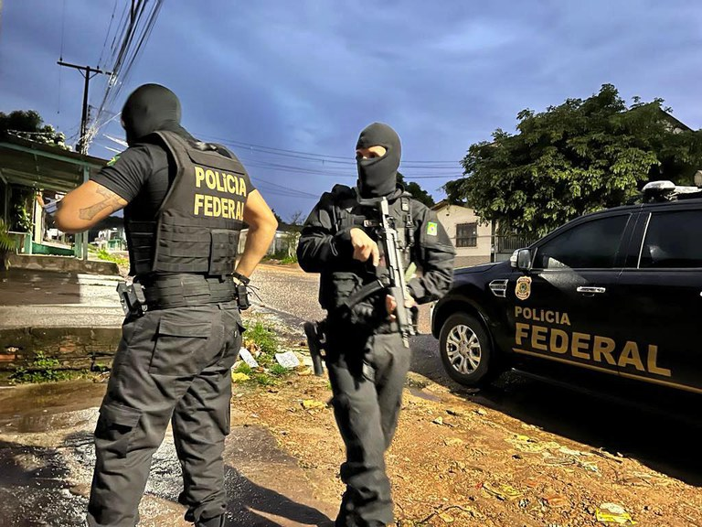
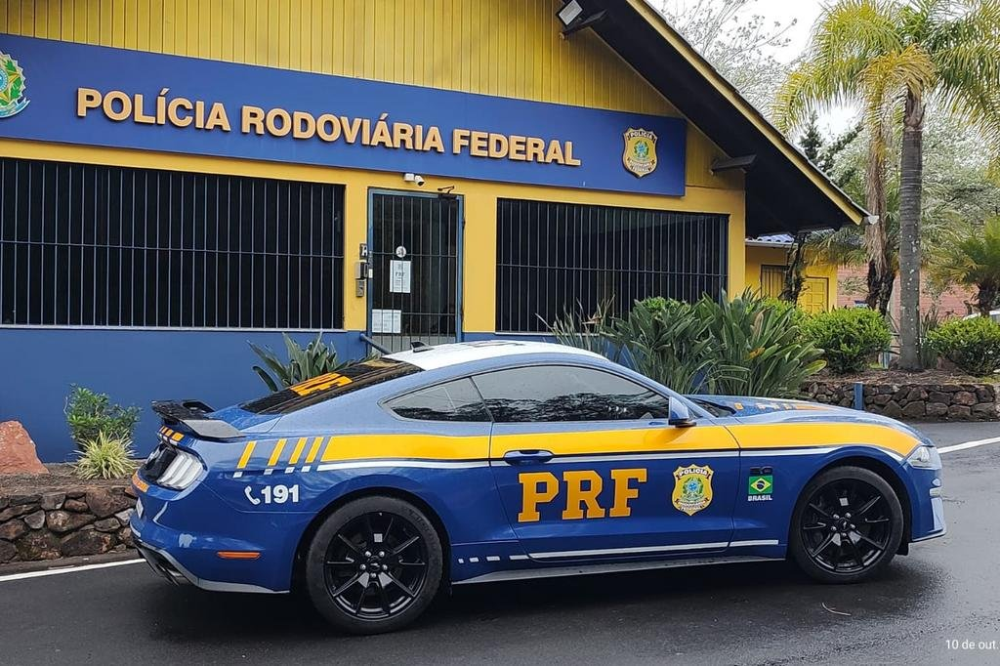
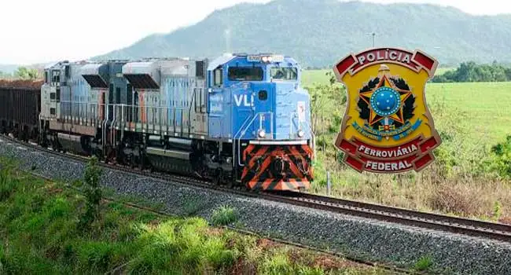
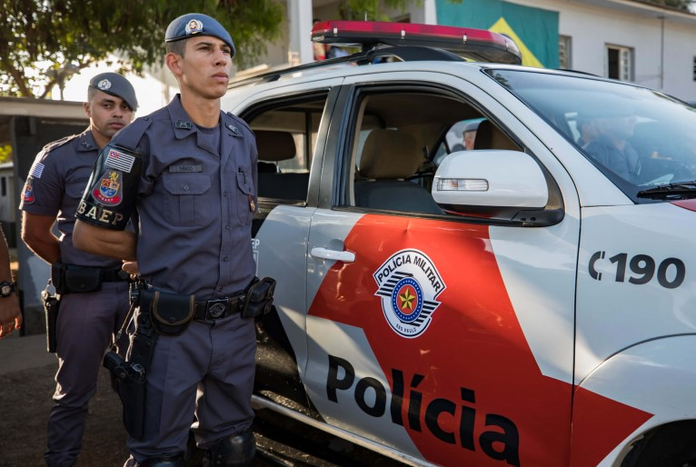
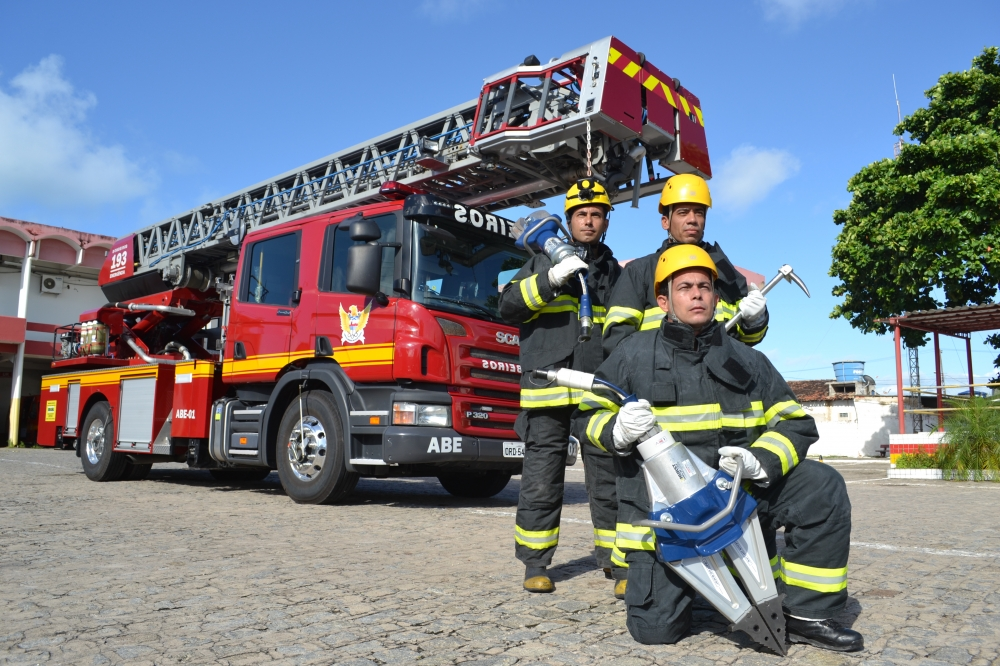
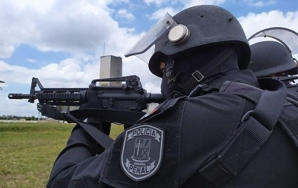
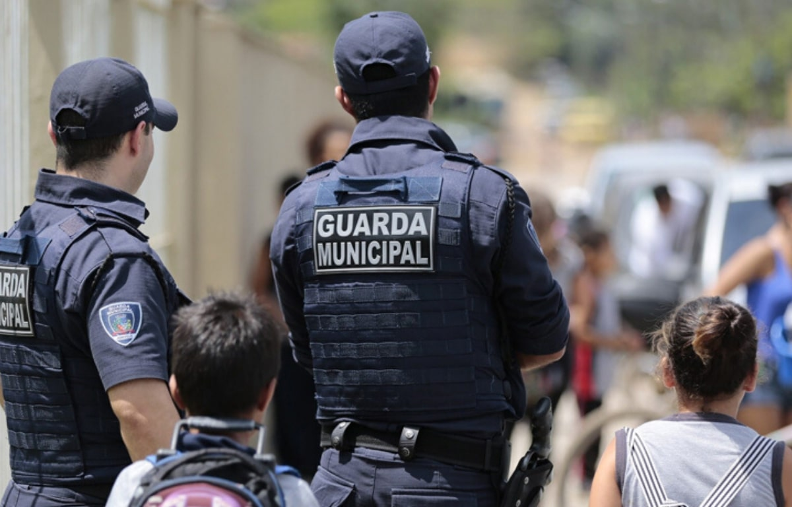

É responsável em âmbito federal, investigando e reprimindo crimes de competência da União, como tráfico de drogas, contrabando, crimes ambientais e crimes financeiros.
Polícia Rodoviária Federal

É responsável pela segurança nas rodovias federais do país, atuando na fiscalização do trânsito, combate ao crime nas estradas e prevenção de acidentes.
Polícia Ferroviária Federal

Órgão permanente, organizado e mantido pela União e estruturado em carreira, destina-se, na forma da lei, ao patrulhamento ostensivo das ferrovias federais.
Polícia Civil
Organizadas e mantidas pelos Estados e Distrito Federal, dirigidas por delegados de polícia de carreira, incumbem, ressalvada a competência da União, as funções de polícia judiciária e a apuração de infrações penais, exceto as infrações militares.
Polícia Militar

São responsáveis pela segurança pública nos Estados e Distrito Federal, atuando na preservação da ordem pública, na prevenção e repressão de crimes, e na garantia da segurança dos cidadãos.
Corpo de Bombeiros Militar

Faz a parte de execução de atividades de defesa civil.
Polícia Penal

Vinculadas ao órgão administrador do sistema penal da unidade federativa a que pertencem, cabe a segurança dos estabelecimentos penais.
Guarda Municipal

Atuam nos municípios na proteção do patrimônio público, na fiscalização do trânsito e no policiamento ostensivo.